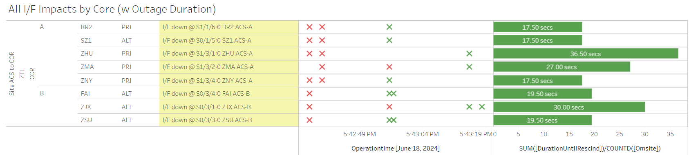
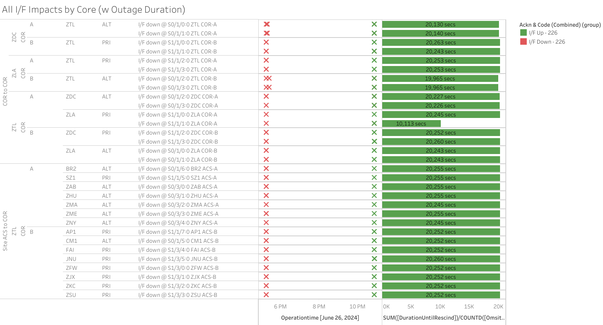
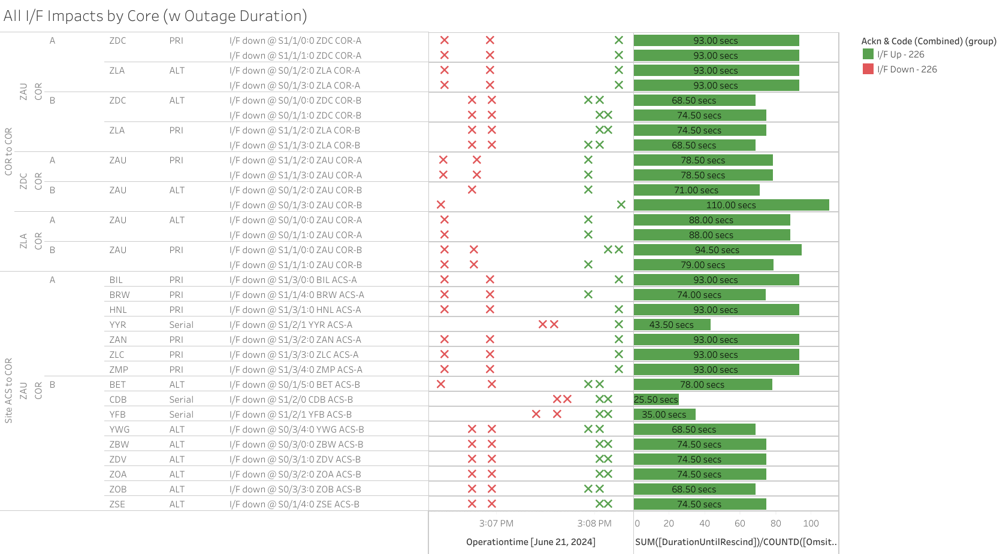

Weekly Highlights 20240612-20240619
DFO2-R1 GUS Field Test (CM1 / BR1)
During the upcoming SSM-WAAS-064, the GUS-Type 1 Receiver (GUST) will be replaced with two (2) G-III receivers at the SGS sites. The new G-III receivers cannot be fully tested in the WAAS lab and must be tested in the field with a live Geostationary Earth Orbit (GEO) satellite. The field test will be conducted at SGS sites S97A and CMA with associated GEO S15-133. During the test, the GEO will be placed in Test Mode and broadcast type 0 messages to WAAS users, which indicate that the GEO satellite message is not to be used for navigation.
- CM1 ticket - ref LIR 802994524
- BR1 ticket - ref LIR 802994824
For more information, refer to the LOA:
- 6/7 20:47 - DFO2-R1 DT Field Test - GUS Switchover: BR1 to Backup / CM1 to Primary -- Stability...
- 6/13 00:01 - DFO2-R1 DT Field Test - GUS Switchover: BR1 to Primary / CM1 to Backup -- Stability...
- 6/18 15:44 - DFO2-R1 DT Field
Test - CM1 / BR1 GUSes to
Maintenance for Fallback to current Field builds
- BR1 GUS restored to Primary at 6/19 00:29
- CM1 GUS required additional day to complete Fallback; restored to Backup at 6/19 18:22
- GEO remains in TEST Mode for at least 24 hours after Fallback complete
6/12 - MX Ring 1 Serial Comms Down
- 6/12 17:58 - All MX Ring 1 comms down hard except MMD (transitioned to Ethernet); ref LIR 815496324; all lines cleared at 6/13 18:59 (~180123 seconds)
6/12 - ZSU Comms Down
- 6/12 18:06 - ZSU Ring 1 PRI / Ring 2 ALT comms down hard; lines cleared after loopback at 6/14 15:12 (~162329 seconds)
6/14 - ZOB Power Panel Work
- 6/14 01:57 - ZOB WRE-B and C to Maintenance Mode
and Control Powered OFF for CPDS Power Panel
work; ref LIR
814862324; restored to Normal
at 6/14 06:43
- After restoring to Normal, ZOB WRE-C RAM usage dropped to normal levels; disk utilization is still running high... will attempt Copy Error Log... since Copy Error Log failed, recommend replace DCP-C
6/14 - ZKC Apparent Power Impact
- 6/14 16:40 - ZKC WRE-A to No Data Reported at the same time ACS-A went down; apparent power issue; site tech checked input power to PCU and cycled power; ref LAD 44230521; restored to Normal at 6/14 19:14
6/14 - ZOB WRE-C DCP-C Replaced
- 6/14 14:19 - ZOB WRE-C Control Powered to attempt address Copy Error Log fail; restored to Normal at 6/14 14:34
- 6/14 18:19 - ZOB WRE-C down for DCP replacement; restored to Normal at 6/14 20:24
6/15 - ZAN WRE-A Fault
- 6/15 02:19 - ZAN WRE-A Faulted with SEs 29, 52, 53, 59; attempted mode change to Maintenance and restore, but Fault occurred again; Control Powered and restored to Normal at 6/15 04:08
6/17 - BIL WRE-A Freq Std Replaced
- 6/17 16:23 - BIL WRE-A returns to Maintenance
after Freq Std replacement; ref LAD
813533824; restored to Normal
at 6/17 17:36
- BIL WRE-A - 6/10-6/17 - Freq Std failure after power panel work
6/18 - SZ1 GUS KPA Maintenance
- 6/18 14:58 - SZ1 GUS to Maintenance for
intrusive KPA maintenance; ref LIR 814797324; restored to Backup at 6/18 19:41
Various Comm Impacts
* Does not include single-line impacts <60 seconds which do not cause an outage
ZSU Comm Hits
- 6/12 06:03 - ZSU Ring 1 ALT / Ring 2 PRI comms took a ~30 second hit
- 6/13 01:52 - ZSU Ring 1 ALT / Ring 2 PRI comms took a ~20 second hit
- 6/14 21:00 - ZSU Ring 1 ALT / Ring 2 PRI comms took a ~30 second hit
Other Sites
- 6/12 08:41 - AP1 Ring 1 ALT / Ring 2 PRI comms took a ~30 second hit
- 6/12 11:54 - BR1 Ring 1 PRI / ALT comms took a ~30 second hit
- 6/13 08:12 - AP1 Ring 1 ALT / Ring 2 PRI comms took a ~45 second hit
- 6/13 17:20 - JNU Ring 1 PRI / Ring 2 ALT comms
flapping; intermittent loopback starting 6/13
18:07;
ISR 0605-2199ref LIR 44219021; last events cleared at 6/13 19:36 (~5596 seconds total) - 6/14 00:43 - MMX Ring 1 comms down hard; line cleared at 6/14 07:42 (~176335 seconds)
- 6/14 07:00 - SZ1 Ring 1 PRI / Ring 2 ALT comms down hard; both lines cleared at 6/14 08:00 (~27069 seconds)
- 6/15 10:34 - ZDV Ring 1 ALT / Ring 2 PRI comms took a ~109 second hit
- 6/15 10:55 - ZDV Ring 1 ALT / Ring 2 PRI comms down hard; both lines cleared at 6/15 13:08 (~7978 seconds)
- 6/16 01:18 - CM1 Ring 1 ALT / Ring 2 PRI comms took a ~129 second hit
- 6/16 03:15 - BRW Ring 1 ALT comms flapping; last event cleared at 6/16 04:09 (~57 seconds total)
- 6/16 07:00 - BRW Ring 1 ALT comms flapping; last event cleared at 6/16 07:15 (~87 seconds total)
- 6/16 13:22 - BRW Ring 1 ALT comms flapping; last event cleared at 6/16 15:35 (~232 seconds total)
- 6/17 10:56 - CM1 Ring 1 ALT / Ring 2 PRI + YFB Ring 2 comms down hard; all lines cleared at 6/17 16:11 (~18886 seconds)
- 6/17 19:35 - ZME Ring 1 ALT / Ring 2 PRI comms flapping; last event cleared at 6/17 20:30 (~753 seconds total)
- 6/18 04:36 - CDB Ring 2 comms flapping; last event cleared at 6/18 06:02 (~1001 seconds total)
- 6/18 16:28 - AP1 Ring 1 PRI / Ring 2 ALT comms took a ~30 second hit
- 6/18 17:42 - Comm hits affecting multiple sites
apparently centered at ZTL affecting both rings
for ~20 seconds;
MR-189417ref LIR 815650824

- 6/18 18:08 - YYR Ring 1 + YFB Ring 1 comms took a ~30 second hit
- 6/19 03:05 - MX Ring 1 Ethernet took a ~103 second comm hit for all MX sites
- 6/19 04:12 - MX Ring 1 Ethernet took a ~100 second comm hit for all MX sites
- 6/19 06:42 - AP1 Ring 1 ALT / Ring 2 PRI + ZOA Ring 1 ALT / Ring 2 PRI comms took a ~40 second hit
- 6/19 16:00 - BR1 Ring 1 PRI / Ring 2 ALT comms took a ~30 second hit
- 6/19 23:30 - BR1 Ring 2 PRI / ALT comms took a ~20 second hit
- 6/13 23:03 - OTZ Ring 1 ALT
comms
cleared (~655183
seconds)
- OTZ WRS - 5/29-6/13 - Comm Line down -- only one available until remaining circuits are deliverd
SSM-WAAS-066 Circuits Outstanding
- OTZ - Following circuits not delivered
/ SA'd
- Ring 1 PRI to ZAU - FTIH-WS-053504
- Ring 2 PRI to ZLA - FTIH-WS-053508
- Ring 2 ALT to ZLA - FTIH-WS-053509
- BRW - Ring 2 ALT to ZLA -
FTIH-WS-053531
- 5/23 - BRW ACS-B Router replaced
- 5/23 17:35 - BRW Ring 2
PRI comms down
hard --
ISR 0521-0090; ref LIR 802755624 --On hold until FAA tech can configure ACS-B router - Troubleshooting ongoing...
MTP - Both Rings
- 3/14 23:20 - MMD, MMX, MTP Ring 1 down
hard -- MTP / MMD OFFLINE; MMX has
partial RG1 on Ring 1 and is
flapping to No Data Reported; ref LIR
764089024 --
Elevated to Level 2. Fires have damaged lines. Local TELCO addressing issues. - 5/15 18:16 - All Ring 1 Mexico comms down hard; all Mexico OFFLINE; ref LIR 798370024; all lines except MTP/MSD Ring 1 cleared at 5/16 01:07 (~128679 seconds for MPR/MMX; ~450104 seconds for MMD)
MSD - Both Rings
- 4/25 15:38 - MSD Ring 1 comms down hard...
List of current offline WREs
List of current offline WREs -- ref WAAS Status Monitor
All Depot shipments to Mexico are halted until the customs process can be finalized
- MMX WRE-C - 5/15-... - Processor failed and could not be restored
- MPR WRE-B - 5/3-... - Inits failing -- looks like a bad freq std; due to shipping issues, there is no spare Freq Std and no ETA to recover WRE-B...
- MTP WRE-B - 7/21/23-... - MTP WRE-B repaired during site visit 5/10/24, but no comm to the site to verify WRE to Normal...
5/11/23-... - MX Ring 2 Satcom Upgrade
MX WAAS Sites comm upgrades in progress:
- 6/5 - Troubleshooting at ZLA-Tijuana shows 4 of 5 circuits have a telco issue localized to Tijuana that must be resolved by FTI; for the MSD circuit, Tijuana could see a loop from ZLA, but ZLA could not see the loop locally -- possible cable issue at ZLA
- Frequentis coordinating with SENEAM at TJX to complete end-to-end testing from remote site to TJX
- After successful testing to TJX; comms should come up at ZLA (if not, coordinate with FTI Harris)
- MMX Ring 2 is currently green, but no UDP packets are coming through

Major Events


Comm Events


Weekly Highlights 20240619-20240626
DFO2-R1 GUS Field Test (CM1 / BR1)
During the upcoming SSM-WAAS-064, the GUS-Type 1 Receiver (GUST) will be replaced with two (2) G-III receivers at the SGS sites. The new G-III receivers cannot be fully tested in the WAAS lab and must be tested in the field with a live Geostationary Earth Orbit (GEO) satellite. The field test will be conducted at SGS sites S97A and CMA with associated GEO S15-133. During the test, the GEO will be placed in Test Mode and broadcast type 0 messages to WAAS users, which indicate that the GEO satellite message is not to be used for navigation.
- CM1 ticket - ref LIR 802994524
- BR1 ticket - ref LIR 802994824
For more information, refer to the LOA:
- 6/18 15:44 - DFO2-R1 DT Field
Test - CM1 / BR1 GUSes to
Maintenance for Fallback to current Field builds
- BR1 GUS restored to Primary at 6/19 00:29
- CM1 GUS required additional day to complete Fallback; restored to Backup at 6/19 18:22
- GEO remains in TEST Mode for at least 24 hours after Fallback complete
- 6/20 18:43 - DFO2-R1 DT Field Test - GUS Switchover: BR1 to Backup / CM1 to Primary
- 6/21 00:39 - DFO2-R1 DT Field Test - GEO 133 set to NORMAL mode; DT Field Test complete
6/20 - MMX WRE-A Fault
- 6/20 12:08 - MMX WRE-A Faulted with SEs 29, 52, 53, 59; Reset and restored to Normal at 6/20 12:42
6/20 - CM1 GUS Fault
- 6/20 16:11 - CM1 GUS Faulted from Backup with SE 143 RFU Subsystem Failure and SE 194 C5 Up-Converter Failure; Control Powered and restored to Backup at 6/20 17:12
6/21 - ZOB WRE-B Fault - Freq Std Fail
- 6/21 17:17 - ZOB WRE-B Faulted with SEs 28, 52, 53, 59; Freq Std appears to have died during fault and not recovered after Control Power; ref LIR 819622324; Control Powered OFF at 6/21 20:07 until follow up action...
- 6/25 12:32 - ZOB WRE-B returns to Maintenance momentarily for site technician to check Freq Std; replacement Freq Std ordered; ZOB WRE-B Control Powered OFF until new Freq Std arrives; ref LIR 819622324...
6/26 - ZTL Comm Outage (MR-189417A / ISR 0626-1840)
- 6/26 17:14 - Major comm impact affecting both
rings at ZTL WCN for
MR-189417A - Multiple circuits OTS for L3 to move cables & circuits to support POP move; ref LIR 44236921 - Extended outaged changed to
ISR 0626-1840; ref LAD 821841924 - All lines cleared at 6/26 22:52 (~20243 seconds)

Various Comm Impacts
* Does not include single-line impacts <60 seconds which do not cause an outage
BR1 Comm Events
- 6/19 16:00 - BR1 Ring 1 PRI / Ring 2 ALT comms took a ~30 second hit
- 6/19 23:30 - BR1 Ring 2 PRI / ALT comms took a ~20 second hit
- 6/21 03:47 - BR1 Ring 1 ALT / Ring 2 PRI comms took a ~30 second hit
- 6/22 12:34 - BR1 Ring 1 PRI / Ring 2 ALT comms took a ~30 second hit
- 6/22 15:31 - BR1 Ring 1 ALT / Ring 2 ALT comms took a ~30 second hit
- 6/22 18:59 - BR1 Ring 1 PRI / Ring 2 ALT comms took a ~30 second hit
YYR / YFB Comm Events
- 6/20 02:15 - YYR Ring 1 / Ring 2 comms took a hit; Ring 2 cleared after ~20 seconds; Ring 1 cleared at 6/20 02:18 (~187 seconds)
- 6/20 18:58 - YYR Ring 1 comms flapping; last event cleared at 6/20 20:15 (~100 seconds total)
- 6/20 19:43 - YFB Ring 1 comms flapping; last event cleared at 6/20 20:20 (~100 seconds total)
- 6/21 18:33 - YYR Ring 1 comms flapping; last event cleared at 6/21 22:18 (~2071 seconds total)
- 6/21 18:42 - YFB Ring 1 comms flapping; last event cleared at 6/21 22:18 (~2223 seconds total)
- 6/22 14:04 - YYR Ring 1 + YFB Ring 1 comms flapping; last events cleared at 6/22 22:24 (~7000 seconds)
- 6/23 14:13 - YYR Ring 1 + YFB Ring 1 comms flapping; last events cleared at 6/23 15:36 (~1300 seconds)
- 6/23 01:32 - YFB Ring 1 + CM1 Ring 1 ALT / Ring 2 PRI comms took a ~60 second hit
CDB Comm Events
- 6/20 09:38 - CDB Ring 1 comms flapping; last event cleared at 6/20 15:33 (~9656 seconds total)
- 6/25 12:52 - CDB Ring 2 comms flapping; last event cleared at 6/25 14:45 (~998 seconds total)
Other Sites
- 6/19 03:05 - MX Ring 1 Ethernet took a ~103 second comm hit for all MX sites
- 6/19 04:12 - MX Ring 1 Ethernet took a ~100 second comm hit for all MX sites
- 6/19 06:42 - AP1 Ring 1 ALT / Ring 2 PRI + ZOA Ring 1 ALT / Ring 2 PRI comms took a ~40 second hit
- 6/20 17:35 - ZLA-ZTL COR-COR Ring 1 ALT comms took a ~20 second hit
- 6/21 15:06 - Major comm event apparently localized to ZAU affecting both Rings and multiple WRS sites for ~90 seconds

- 6/22 03:14 - ZJX Ring 1 ALT / Ring 2 PRI comms took a ~60 second hit
- 6/22 05:02 - ZSU Ring 1 ALT / Ring 2 PRI comms took a ~30 second hit
- 6/22 07:35 - ZSU Ring 1 ALT / Ring 2 PRI comms took a ~30 second hit
- 6/23 02:47 - AP1 Ring 1 ALT / Ring 2 PRI comms took a ~20 second hit
- 6/24 20:15 - OTZ Ring 1 ALT comms down hard for ~90 seconds
- 6/25 08:44 - BRW Ring 1 ALT + OTZ Ring 1 ALT + BET Ring 1 ALT / Ring 2 PRI comms flapping; last events cleared at 6/25 08:57 (~190 seconds total)
- 6/26 08:00 - OTZ Ring 1 ALT comms flapping; last event cleared at 6/26 08:26 (~175 seconds total)
- 6/26 08:01 - BRW Ring 1 ALT comms flapping; last event cleared at 6/26 08:26 (~86 seconds total)
SSM-WAAS-066 Circuits Outstanding
- OTZ - Following circuits not delivered
/ SA'd
- Ring 1 PRI to ZAU - FTIH-WS-053504
- Ring 2 PRI to ZLA - FTIH-WS-053508
- Ring 2 ALT to ZLA - FTIH-WS-053509
- BRW - Ring 2 ALT to ZLA -
FTIH-WS-053531
- 5/23 - BRW ACS-B Router replaced
- 5/23 17:35 - BRW Ring 2
PRI comms down
hard --
ISR 0521-0090; ref LIR 802755624 --On hold until FAA tech can configure ACS-B router - Troubleshooting ongoing...
MTP - Both Rings
- 3/14 23:20 - MMD, MMX, MTP Ring 1 down
hard -- MTP / MMD OFFLINE; MMX has
partial RG1 on Ring 1 and is
flapping to No Data Reported; ref LIR
764089024 --
Elevated to Level 2. Fires have damaged lines. Local TELCO addressing issues. - 5/15 18:16 - All Ring 1 Mexico comms down hard; all Mexico OFFLINE; ref LIR 798370024; all lines except MTP/MSD Ring 1 cleared at 5/16 01:07 (~128679 seconds for MPR/MMX; ~450104 seconds for MMD)
MSD - Both Rings
- 4/25 15:38 - MSD Ring 1 comms down hard...
List of current offline WREs
List of current offline WREs -- ref WAAS Status Monitor
- ZOB WRE-B - 6/21-... - Freq Std failed
All Depot shipments to Mexico are halted until the customs process can be finalized
- MMX WRE-C - 5/15-... - Processor failed and could not be restored
- MPR WRE-B - 5/3-... - Inits failing -- looks like a bad freq std; due to shipping issues, there is no spare Freq Std and no ETA to recover WRE-B...
- MTP WRE-B - 7/21/23-... - MTP WRE-B repaired during site visit 5/10/24, but no comm to the site to verify WRE to Normal...
5/11/23-... - MX Ring 2 Satcom Upgrade
MX WAAS Sites comm upgrades in progress:
- 6/5 - Troubleshooting at ZLA-Tijuana shows 4 of 5 circuits have a telco issue localized to Tijuana that must be resolved by FTI; for the MSD circuit, Tijuana could see a loop from ZLA, but ZLA could not see the loop locally -- possible cable issue at ZLA
- Frequentis coordinating with SENEAM at TJX to complete end-to-end testing from remote site to TJX
- After successful testing to TJX; comms should come up at ZLA (if not, coordinate with FTI Harris)
- MMX Ring 2 is currently green, but no UDP packets are coming through

Major Events


Comm Events